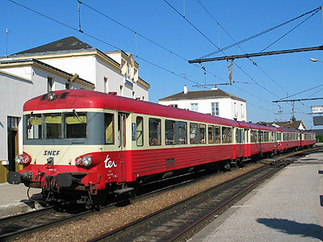
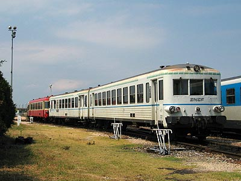
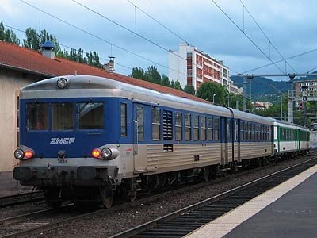
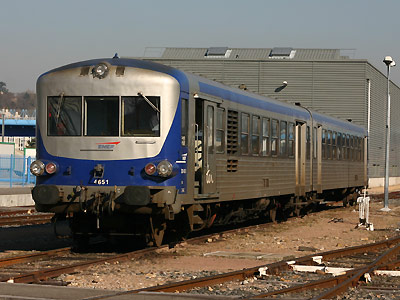
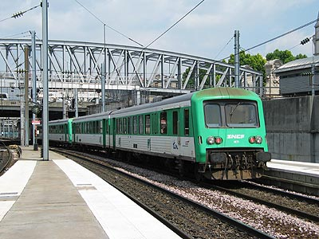

X 4630 - 94630
Les X 4630 sont étroitement dérivés des X 4500. Ils en reprennent le moteur Saurer de 450 chevaux mais la transmission fait appel à un convertisseur hydraulique Voith.
La numérotation de la série X 4630 est curieuse puisqu'elle ne commence pas à un nombre rond, cependant il y a bien un trou entre le dernier X 4500 (X 4623) livré le 5 juin 1970 et l'X 4630 (la série ne débute pas à 4631) livré le 12 février 1971. Les remorques XR 8300 et XR 8500 sont communes à toutes les séries d'X 4300, 4500 et 4630.
113 exemplaires furent construits, auxquels s'ajoutent l'X 4609 transformé en X 4743 et l'X 94630, identique aux 4630 mais exploité exclusivement sur la ligne Cannes-Ranguin avant d'être revendu à la SNCF en 1995, qui l'a transformé en X 4744.
Les X 4630 n'ont pas eu beaucoup de sursis par rapport aux séries à boîte mécanique. Alors que des radiations ponctuelles commençaient en 2003 sur les "Ambulances" assez détériorées par l'air salin nantais, les radiations massives ont débuté en 2008 et 2009 avec l'arrivée en force des AGC. Les derniers éléments en service commercial furent mis à la retraite en février 2012. Il ne subsiste que trois éléments à l'inventaire, tous au service de l'INFRA (X 4630, 4652, 4670).
Les X 4630 ne sont pas tous partis à la casse pour autant. Quarante X 4630 poursuivent une seconde carrière en Roumanie.
Parmi les engins préservés en France, on compte :
L'X 4647 préservés par l'ABFC.
L'X 4719 par le CFT Sud des Ardennes
Les X 4709 et 4730 par le Train du Pays Cathare et du Fenouillèdes
L'X 4691 par l'Amicale de la ligne Caen-Flers
Les Livrées
En dehors de la livrée classique rouge et crème, les X 4630 ont porté des livrées plus atypiques.
Les rames affectées à la banlieue Nantaise ont reçu une livrée similaire à celle du tramway TAN, blanche réhaussée d'une fine bande bleue et d'un liseret pointillé vert en limite de pavillon. Ce qui leur a valu le surnom d'"Ambulances".
Plusieurs engins ne bénéficiant pas d'une rénovation lourde ont néanmoins été repeints avec les coloris TER gris métallisé et bleu institution. Les premiers entretenus à Nevers reprenant le schéma de peinture habituel des EAD, les autres gérés par Lyon Vaise adoptant un dessin proche des automoteurs TER de nouvelle génération.
Quelques données techniques
Constructeur : ANF
Motorisation : Saurer SDHR
Puissance : 330 kW
Vitesse limite : 120 km/h
Masse : 63,1t
Longueur : 42,480 m
Pour plus d'info :
La fiche X 4630 sur Wikipedia
Fiche technique des Caravelles de Florent Brisou
Les fiches X 4630 et X 94630 sur trains-europe.fr
L'inventaire des X 4630 sur Trains du Sud-Ouest

L'X 4651 à L'Arbresle (04/12/2004)

La remorque XRAB 8722 en queue d'une UM mixte d'EAD à boite
mécanique (X 4340/XR 8325) et hydraulique (X 4725), en correspondance à Laroche-Migennes pour Auxerre (08/04/2003)

L'X 4686 "Ambulance" à Roanne (27/06/2004)

L'X 4638 dans une livrée TER intermédiaire à Clermont-Ferrand (01/06/2004)

L'X 4651 en livrée TER à Lyon Vaise (09/02/2008)

Les X 4673 et 4680 Pays de la Loire, rénovation lourde,
à Ste Pazanne (18/06/2005)

L'X 4671 à Paris Nord (07/07/2003)